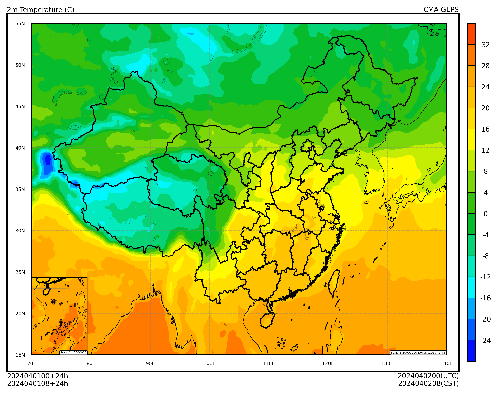

本地文件#
本地文件 是支持 POSIX 协议通过文件路径访问的文件，包括但不限于：
本机存储系统中的文件
共享存储系统中的文件，例如超算平台的存储系统
网络挂载存储中的文件，例如挂载的二级存储
cedarkit 工具套件中数据准备工具库 reki 支持从文件系统中加载要素场。
本节介绍 reki 库基本使用方法，随后几个章节介绍其他支持加载 GRIB2 要素场的工具库如何与 cedarkit-maps 对接，包括：
pygrib: jswhit/pygrib
cfgrib: ecmwf/cfgrib
earthkit-data: ecmwf/earthkit-data
iris: SciTools/iris (暂时有问题，无法正常加载GRIB文件)
reki#
reki 库的 reki.data_finder 模块包含本地文件查找函数 find_local_file，可以使用内置的配置文件查找 CMA 超算平台中的 CEMC 业务系统数据产品。
reki 库的 reki.format.grib 模块包含要素加载函数 load_field_from_file，支持从本地文件中加载一个要素场。
导入需要的包
import xarray as xr
import pandas as pd
from reki.data_finder import find_local_file
from reki.format.grib import load_field_from_file
设置绘图的数据参数，使用 CMA-GEPS 2024 年 4 月 1 日 00 时次 024 时效集合成员 1 的数据。
system_name = "CMA-GEPS"
data_type = "cma_geps/grib2/orig"
start_time = pd.to_datetime("2024-04-01 00:00:00")
forecast_time = pd.to_timedelta("24h")
number = 1
加载数据#
查找 GRIB2 数据文件的路径
file_path = find_local_file(
data_type,
start_time=start_time,
forecast_time=forecast_time,
number=1,
)
file_path
PosixPath('/g3/COMMONDATA/OPER/CEMC/GEPS/Prod-grib/2024040100/grib2/gef.gra.001.2024040100024.grb2')
加载 2 米温度要素场。
t_2m_field = load_field_from_file(
file_path,
parameter="2t",
) - 273.15
t_2m_field
<xarray.DataArray '2t' (latitude: 360, longitude: 720)> Size: 2MB
array([[-27.13763672, -23.05763672, -23.02763672, ..., -23.07763672,
-23.04763672, -23.01763672],
[-25.99763672, -22.87763672, -22.89763672, ..., -22.90763672,
-22.88763672, -22.87763672],
[-26.66763672, -22.93763672, -23.02763672, ..., -22.99763672,
-22.98763672, -22.97763672],
...,
[-45.65763672, -45.31763672, -45.74763672, ..., -45.70763672,
-45.76763672, -46.06763672],
[-45.68763672, -45.85763672, -45.95763672, ..., -46.42763672,
-45.62763672, -45.88763672],
[-45.27763672, -46.06763672, -45.97763672, ..., -45.56763672,
-45.53763672, -46.02763672]])
Coordinates:
time datetime64[ns] 8B 2024-04-01
step timedelta64[ns] 8B 1 days
valid_time datetime64[ns] 8B 2024-04-02
heightAboveGround int64 8B 2
* latitude (latitude) float64 3kB 89.75 89.25 ... -89.25 -89.75
* longitude (longitude) float64 6kB 0.0 0.5 1.0 ... 358.5 359.0 359.5
number int64 8B 1绘图#
使用 cedarkit-maps 绘制 2 米温度填充图
Show code cell source
from cedarkit.maps.style import ContourStyle
from cedarkit.maps.chart import Panel
from cedarkit.maps.domains import EastAsiaMapDomain
from cedarkit.maps.colormap import get_ncl_colormap
t_2m_level = [-24, -20, -16, -12, -8, -4, 0, 4, 8, 12, 16, 20, 24, 28, 32]
color_index = [2, 12, 22, 32, 42, 52, 62, 72, 82, 92, 102, 112, 122, 132, 142, 152]
t_2m_color_map = get_ncl_colormap("BlAqGrYeOrReVi200", index=color_index)
t_2m_style = ContourStyle(
colors=t_2m_color_map,
levels=t_2m_level,
fill=True,
)
domain = EastAsiaMapDomain()
panel = Panel(domain=domain)
panel.plot(t_2m_field, style=t_2m_style)
domain.set_title(
panel=panel,
graph_name="2m Temperature (C)",
system_name=system_name,
start_time=start_time,
forecast_time=forecast_time,
)
domain.add_colorbar(panel=panel, style=t_2m_style)
panel.show()
